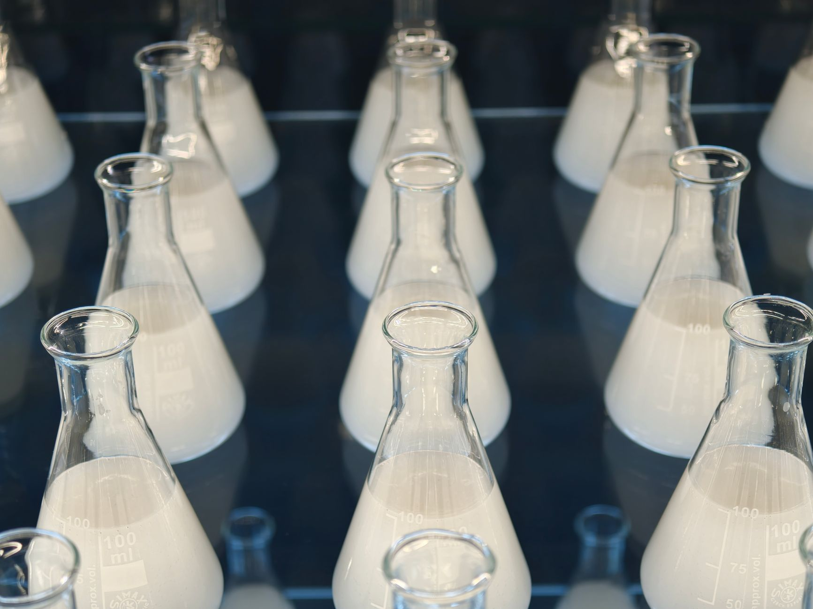

中 헬륨 통제 현실화, 반도체 팹 냉각 위기

[자료사진] 기사와 무관한 이미지입니다.
중국은 2025년 하반기부터 헬륨을 이중용도 전략물자 목록에 추가하고 수출허가제 적용을 공식화했다. 헬륨은 반도체 웨이퍼 세정·이온주입·MRI·광섬유 제조 등 다중 공정에 걸쳐 쓰이며, 현재 글로벌 공급의 약 25%가 카타르·러시아산이지만 아시아 유통의 핵심 허브는 중국이다.
한국은 연간 약 400만 ㎥의 헬륨을 수입하며 이 중 약 35%가 중국을 경유한다. 삼성전자·SK하이닉스·DB하이텍 등 국내 주요 팹은 액체헬륨을 EUV 스캐너 냉각(극저온 4K 유지)과 이온주입기 운용에 필수적으로 사용한다. 현재 국내 전략비축량은 30일분 이하로 추정된다.
갈륨·게르마늄과 달리 헬륨은 국내 생산이 불가능한 희귀 불활성 기체다. 미국 텍사스·카타르·러시아 3개국이 글로벌 공급의 75% 이상을 점유하나, 러시아 아무르 플랜트는 우크라이나 전쟁 이후 유럽 공급망에서 이탈했고 카타르산은 장기계약 물량이 이미 일본·유럽에 선점돼 있어 한국의 단기 대체 조달 여력은 극히 제한적이다.
2023년 갈륨 통제 이후 소재 1종당 평균 가격 상승 사이클이 6~18개월 내 현실화된 패턴을 감안하면, 헬륨 현물가 급등은 2026년 상반기 내 가시화될 가능성이 높다. 현재 산업용 헬륨 현물가는 ㎥당 약 35~45달러 수준이나 공급 차질 시 2~3배 급등 시나리오가 시장에서 회자되고 있다.
헬륨 통제는 갈륨·게르마늄과 질적으로 다른 위협이다. 갈륨은 3년의 시간을 두고 고려아연 같은 국내 대안이 가시화됐지만, 헬륨은 지구 대기 농도 0.0005%의 희귀 기체로 국내 생산 자체가 불가능하다. 통제가 강화되는 순간 대체재 개발 경로가 원천 차단된다는 점에서 공급망 리스크의 성격이 근본적으로 다르다.
반도체 팹에서 헬륨 공급이 끊기는 것은 단순한 원가 상승이 아니라 공정 중단을 의미한다. EUV 스캐너 1대의 냉각에 필요한 액체헬륨이 공급되지 않으면 해당 라인 자체가 가동 불능 상태가 된다. 삼성전자 평택 캠퍼스, SK하이닉스 이천·청주 팹이 보유한 EUV 장비 수십 대가 동시에 영향권에 들어갈 수 있다.
미국 에어프로덕츠, 린데, 에어리퀴드 등 서방 산업가스 3사가 가장 직접적인 수혜를 받는다. 이들은 텍사스·카타르 헬륨 생산 시설을 직접 운영하며 장기공급계약(LTC) 협상력이 급등한다. 특히 에어프로덕츠는 카타르 라스라판 플랜트 지분을 보유하고 있어 아시아 시장 재배분 협상에서 프리미엄 포지션을 확보한다.
헬륨 재활용·회수 시스템 전문 기업들도 반사이익을 본다. 독일 Linde Engineering, 국내 유니온머티리얼즈 등 팹 내 헬륨 회수율을 현행 40~60%에서 90% 이상으로 끌어올리는 회수 장치 납품 수요가 급증할 것으로 보인다. 이 시장은 현재 연간 수백억 원 규모에서 수천억 원 규모로 확대될 여지가 있다.
삼성전자·SK하이닉스는 EUV 의존도가 높아질수록 헬륨 취약성이 구조화된다. 2026년까지 EUV 장비 도입 계획이 각각 10대 이상인 상황에서 헬륨 조달 차질은 HBM4·3nm 이하 공정 램프업 일정 전반에 영향을 미친다.
파운드리 중소 고객사(팹리스)들은 삼성·TSMC 대비 협상력이 약해 헬륨 관련 원가 인상이 웨이퍼 단가에 전가될 경우 수익성 악화가 더 빠르게 나타난다. 국내 DB하이텍, 키파운드리 등 레거시 노드 팹도 헬륨 수급 불안정 시 가동률 조정 압박을 받을 수 있다.
헬륨 조달 담당자라면 지금 당장 현재 공급 계약의 원산지 조항을 재점검해야 한다. '중국 경유' 물량이 포함된 계약은 공급 차질 시 면책 조항이 어떻게 설계돼 있는지, 대체 공급선 전환 리드타임이 얼마나 걸리는지를 즉시 확인해야 한다.
팹 운영사라면 헬륨 회수율 제고가 즉각적인 비용 헤지 수단이다. 현재 팹 내 회수율이 60% 미만이라면 회수 장치 투자의 ROI는 헬륨 현물가 상승 가속 시나리오에서 12~18개월 내 회수 가능하다. 투자 시점을 미루는 것이 오히려 더 큰 비용을 낳는다.
실제 조달 현장에서는 — 헬륨은 갈륨·게르마늄 통제 초기와 달리 이미 공급선이 카타르·미국 장기계약 물량으로 사전 선점된 상태라 '통보 후 조달'이 불가능한 소재다. 지금 LTC 계약이 없는 중소 팹은 스팟 시장에서 2~3배 프리미엄을 지불하거나 가동 조정을 택해야 하는 상황이 수개월 내 현실이 될 수 있다. 장기계약 체결을 지금 당장 우선 순위 1번으로 올려야 한다.
이 포스팅은 쿠팡 파트너스 활동의 일환으로 수수료를 제공받습니다.